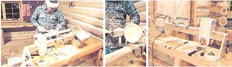

LEFT TO RIGHT Spindles?such as this table leg?up to 30 inches long can be turned down accurately . . . . By installing a faceplate and moving the tool rest, you can make bowls, too . . . . It may not be high-tech, but it's perfectly functional.